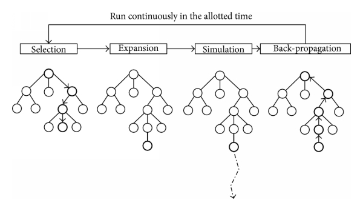

Capítulo 4 Metodologia
Descrevemos aqui os métodos utilizados neste projeto. Importante: a recompensa é +1 pra cada dano recebido pela nave do jogador( do ponto de vista dos oponente, os quais estamos tentanto otimizar) e -1 pra cada dano recebido pela nave oponente. Além disso, +100 é dado de o tiro inimigo matar o oponente, e -100 é recebido se uma nave inimiga morrer.
4.1 Neural Network
Uma rede neural de 1 camada escondida foi treinada com busca aleatória no espaço de pesos. O processo é muito simples, com a rede sendo avaliada em um número de partidas com os pesos gerados, e caso ela seja a melhor rede até agora( no acúmulo de recompensas), salvamos seus pesos e os modificamos em direções aleatória usando ruído gaussiano. O resultado foi aquém do esperado, talvez devido a complexidade do problema e a esparcidade das recompensas, que ocorrem com pouca frequência.
4.2 Monte Carlo 1-Step Planning
Utiliza-se simulação monte carlo para se estimar o retorno esperado de cada ação possível no estado atual. Rollouts/playouts/partidas aleatórias são simuladas até certo passo estipulado. A recompensa acumulada até aquele passo é utilizada como estimativa do retorno esperado. Quanto mais simulações melhor, logo é importante a velocidade do simulador. O funcionamento é ilustrado na figura abaixo:

Por causa do enorme número de ações, esse método se torna menos eficiente. Melhorias possíveis são a utilização de métodos que selecionam subconjuntos de ações disponíveis.
4.3 Monte Carlo Tree Search
O MCTS (Browne et al. 2012) é o método de melhor resultado, é uma melhoria do MC onde se constroi uma árvore de ações na memória. Seu funcionamento se dá pelos 4 passos ilustrados na figura abaixo:

Selection: O agente percorre a parte da árvore na memória, escolhendo os nós por meio do UCB, umas das técnicas de tomada de decisão do problema de Multi-armed bandit. Expansion: Dentre os nós filhos do ultimo nó da seleção, escolhemos um para colocar na memória. Geralmente a escolha é sequencial. Playout: O jogo continua de modo aleatório até o fim da partida Backpropagation: As recompensas são adicionadas aos nós da memória percorridos nessa iteração.
A MCTS vai acabar convergindo na arvore de busca MinMax, que encontra a melhor decisão considerando o as melhores decisões que o oponente pode tomar(Equilíbrio Nash). No entanto, é importante frisar que as ações do jogador vem de um surrogate, o que diminui a validade téorica do algoritmo.
Referências
Browne, Cameron B, Edward Powley, Daniel Whitehouse, Simon M Lucas, Peter I Cowling, Philipp Rohlfshagen, Stephen Tavener, Diego Perez, Spyridon Samothrakis, and Simon Colton. 2012. “A Survey of Monte Carlo Tree Search Methods.” IEEE Transactions on Computational Intelligence and AI in Games 4 (1). IEEE: 1–43.